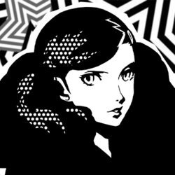

Lovers VI

Ann Takamaki
Confidant Abilities
| Rank | Ability |
|---|---|
| 1 | - |
| 2 | Girl Talk: If negotiation with a female Shadow fails, you can try again. |
| 3 | Follow Up: Chance to perform a follow-up attack if Joker’s attack does not down the enemy. |
| 4 | Sexy Technique: Chance to grab the enemy’s attention and cancel their action. |
| 5 | Crocodile Tears: Chance to force enemies to ask for less during negotiations. |
| 6 | Harisen Recovery: Chance to cure status ailments inflicted upon party members. |
| 7 | - |
| 8 | Endure: Chance to withstand an otherwise fatal attack with 1 HP remaining. |
| 9 | Protect: Chance to shield Joker from an otherwise fatal attack. |
| 10 | Second Awakening: Evolves Persona. |
| MAX | Third Awakening: Evolves Persona. |
Rank Up Progression
| Rank | Requirements / Dialogue Choices | Next Pts |
|---|---|---|
| 1 | (Automatic) 4/15 | 0 |
| 2 | Requires Kindness Lv 2 (Considerate). 1. "She's so strong." (+15) 2. "You might be right." (+10) 3. "I couldn't just ignore you." (+10) 4. Any (+15) 5. Any (+5) | 35 |
| 3 | 5. "Can we stop yet?" (+10) 8. "Has that happened to you?" (+10) 9. "That freedom sounds nice." (+5) 10. (Phone) "Could be." (+5) | 25 |
| 4 | 1. "I know what you mean." (+10) 2. "That's hilarious." (+15) 3. "Tell me." (+15) 4. "Good idea." (+10) 5. "Good luck with that." (+15) 6. (Phone) "I train everyday." / "I carry Morgana in my bag." (+5) | 20 |
| 5 | 1. "Give it up." (+5) 2. "She's amazing, huh..." (+5) 3. "It had grace." (+5) | 35 |
| 6 | 1. "It seems that way." (+10) 4. "Show her your own strength." (+15) 5. (Phone) "Someone's motivated." / "I'll cheer you on." (+5) | 45 |
| 7 | 1. "She admires you." (+5) 4. "Go get 'em, tiger." (+5) 5. (Phone) "You got this." (+5) | 30 |
| 8 | 1. "You have some real guts." (+10) 2. "There's no doubt in my mind." (+15) 4. Any (+15) 5. (Phone) "That's probably it." / "You can ask her yourself." (+5) | 67 |
| 9 | 3. Any (+15) Friendship: "You have the others." (+0) Romance: "You have me." (+0) (Phone) "I'm yours forever." (+10) | 35 |
| 10 | N/A (1/13) | MAX |
Gift Guide
| Gift Item | Confidant Points | Purchase Location | Price |
|---|---|---|---|
| Heart Ring | +50 | Jewelry Store, Station Underground Mall, Shibuya | ¥88,000 |
| Uji Matcha Flan | +50 | Taisho Store Premium Supermarket, Station Underground Mall, Shibuya | ¥2,400 |
| Truffles | +50 | Supermarket, Station Underground Mall, Shibuya | ¥2,800 |
| Castella | +50 | Supermarket, Station Underground Mall, Shibuya | ¥1,500 |
| Bath of Roses | +50 | Flower Shop, Shinjuku at Night | ¥3,200 |
| Face Beautifier | +50 | Electronics Superstore, Akihabara | ¥9,800 |
Bonus Events
Hangout Study (5/9 - Knowledge +3♪)
- Any (+5)
Hangout Study (7/11 - Knowledge +3♪)
- Any (+5)
Hangout Movies (7/17 - Charm +3♪)
- "Understandable." (+10)
Hangout Meiji-Shrine (8/6 - Cleared Futaba's Palace, Requires Death Rank 1+)
- "You're amazing, doc." (Lovers & Death +10)
Hawaii Trip (9/10 - Lovers Rank 9+ Romance Only)
- "It's 'cause you're cute." / "I'm entranced." (+15)
- "Sure." (+15)
- "I love you, Ann." (+15)
- Any (+15)
- Receive Menehune Dolls
Hangout Study (10/15 - Knowledge +3♪)
- Any (+5)
Hangout Inokashira Park (Requires Lovers Rank 2+)
- "Let's just enjoy the air." (+15)
Hangout Ikebukuro
- "Did you make a wish?" (+15)
Hangout Shibuya
- "Sounds like a good plan." (+15)
- Receive Choco Fountain
Hangout Harajuku
- "Yeah." / "I guess you do stand out." (+10)
- Receive Idol Poster
Hangout Ueno (Lovers Rank 9+ Friendship Only)
- "A lot has changed." (+15)